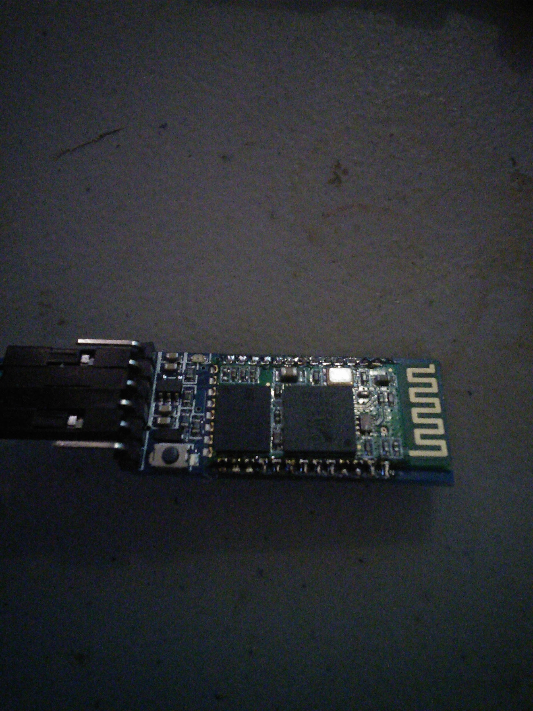
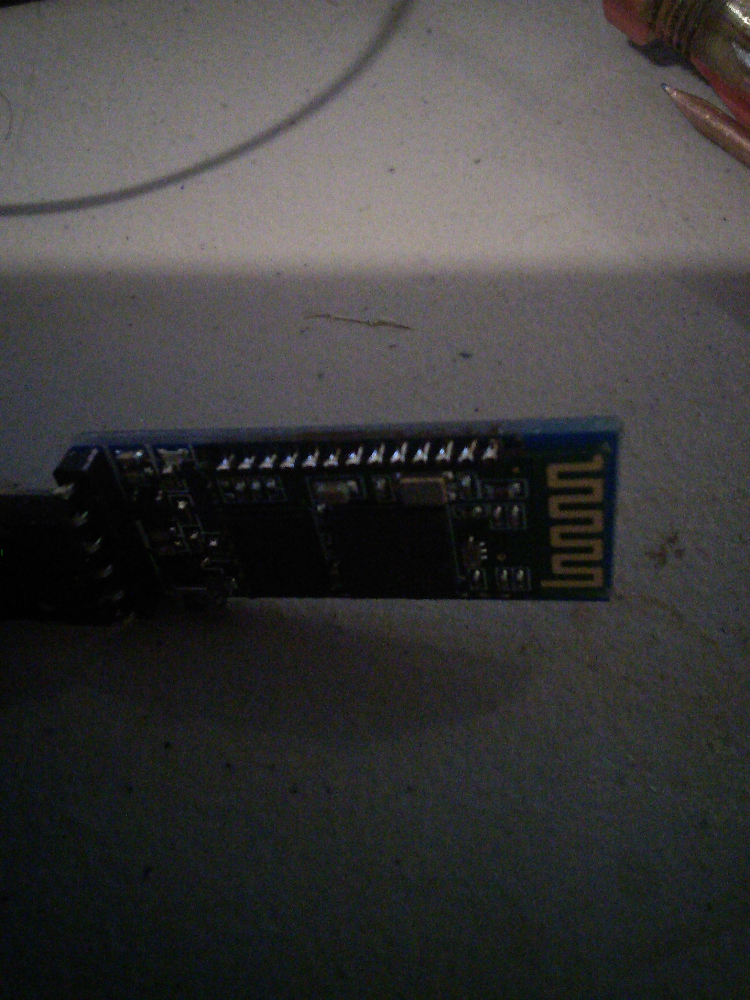
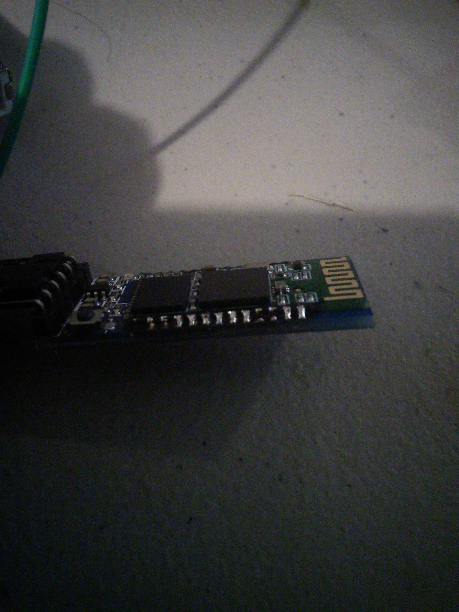

4/1/2014 HC-05 Bluetooth device
1. Project Reference Number / Title:
- 20140401 HC-05 Bluetooth device
Apr 1, 2014 HC-05 Bluetooth device
At the 1st meeting I attended Jim gave me a blank holder for the HC-05 Bluetooth device, I was able to solder a HC-05 to it today, and it worked well.
The HC-05 bluetooth is a surface mount style device, and that can be a little scary for people.
They are cheap enough, and the blank is cheap enough I figured if I messed it up I wasn’t out much. You aren’t saving yourself much by soldering your own to the blank (I think .30 or .35 cents, spend the extra money and get one already mounted).
I used the “drag” method of soldier, which is only one method for doing surface mounts, but I’ve got to say, it was easy to do, and it works, and it works well.
You’ll see in a couple of the pictures below that I didn’t get every pin, on this it doesn’t matter, I got the pins that are connected and as I said the bluetooth does work well.
{width="6.5in" height="8.666666666666666in"}
{width="6.5in" height="8.666666666666666in"}
{width="6.5in" height="8.666666666666666in"}